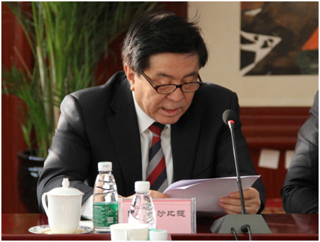

在“中国民族语文翻译局成立60周年座谈会”上的工作汇报
中国民族语文翻译局局长 阿力木沙比提

尊敬的向巴平措副委员长、尊敬的王正伟副主席：
各位领导、各位嘉宾、同志们：
大家好！在全国上下深入贯彻落实十八届五中全会精神的重要时期，我们相聚在这里，共同纪念中国民族语文翻译局建局60周年。首先，我谨代表翻译局全体职工，向在百忙中莅临指导的各位领导、各界朋友表示热烈的欢迎，向长期以来关心支持翻译局的各级部门表示衷心的感谢！下面，我简要汇报一下翻译局承担的主要工作。
上世纪五十年代，新中国成立伊始，百废待兴，中华各民族全力进行社会主义建设，复兴经济命脉，少数民族也由此进入了一个历史的新时代。在这一背景下，为实现各民族人民平等团结、繁荣进步，开创新中国伟大复兴的光辉未来，党中央高瞻远瞩，从全国各地调集了一批优秀的民族语文翻译人才，共创民族语文翻译大业。1955年12月12日，周恩来总理亲笔批示，成立中华人民共和国民族事务委员会翻译局，这是我国唯一的国家级少数民族语言文字翻译机构，专门从事全国党代会、全国“两会”等党和国家重要的会议，以及马列经典著作、中央重要文件文献的民族语文翻译。
随后数十年，由于事业发展的需要，曾四度更名，翻译语种由五种增加到七种。在这发展变化过程中，我们始终与我国民族工作同呼吸、共命运，坚定前行，我们的翻译工作保持了历史的延续性。截至今天，用蒙古、藏、维吾尔、哈萨克、朝鲜、彝、壮七种民族语文，翻译各类图书2万6千余本，翻译量超过了四亿字。先后多次获得“全国民族团结进步先进集体”“全国先进保密工作集体”“中央国家机关五一劳动奖状”“中央国家机关文明单位”等荣誉称号。
“翻译是我们的使命，质量是我们的根本”。60年来，翻译局始终以服务党和国家大局为己任，永葆对党忠诚的坚定信念，圆满完成了所承担的历届历次全国党代会、人代会、政协会议主要文件的翻译和同声传译，为党和国家重大的政治活动提供了优质服务。
全国党代会、全国“两会”，是国家政治生活中的大事，国内外关注度极高。在国家最高规格的会议上承担翻译服务工作，在人民大会堂四楼同传室用少数民族语实时传递大会的声音，是我们神圣的职责，也是我们每年工作的重中之重。我们深知这项工作的严肃性，以及通过翻译工作所承载的巨大的传播效应。翻译的质量和效率，直接影响着能否为少数民族代表委员履职尽责、参政议政提供良好的服务，更深层次地也体现了宪法赋予少数民族使用和发展自己语言文字的权利。正伟副主席去年视察“两会”民族语文翻译工作时，曾指出：民族语文翻译工作是国家民委工作中能够引起党中央、国务院高度重视的非常重要的组成部分。正伟副主席对我们的工作给予了高度评价，也充分体现了这份工作在整个国家格局中是占有一定分量的。
经过半个多世纪的耕耘，全国党代会、全国“两会”翻译已经成为翻译局常态性的工作。但是越是这种常态性工作，我们越不敢有丝毫懈怠之心。为了确保翻译质量准确无误、保密工作万无一失，每次上会我们都保持第一次上会时的心态，以最饱满的状态、最充足的准备投入到大会工作中。多年来，我们这个民族工作战线上的特殊群体，就是以这样一种特殊的身份见证着中国民主政治建设的历程，也见证着民族语文翻译事业的发展。
60年来，翻译局始终以传播马克思主义理论、宣传中国化的马克思主义为己任，致力于马恩列斯、老一辈无产阶级革命家著作以及党和国家重要文件文献的翻译，在党中央和民族地区之间架设了一座通道和桥梁。
中共中央在《关于一九四三年翻译工作的决定》中就指出：“翻译工作，尤其是马列主义古典著作的翻译工作，是党的重要任务之一。”用七种民族文字翻译经典著作，把马克思主义中国化的最新理论成果及时传递给少数民族群众，是我们牢记于心的光荣使命。第一任老局长朋斯克同志在建局初期，就一再强调：“中央翻译局的工作是党中央、国务院贯彻落实党的民族政策的工具，一定要把党中央、国务院的声音及时准确地用各种少数民族的文字传达到少数民族的心中，增强少数民族群众对党和国家的向心力，维护全国各族人民的大团结。”
“根本要坚持，经典不能丢”。我们60年如一日，兢兢业业、埋头苦干，先后翻译了马恩列斯选集、翻译了毛泽东、周恩来、刘少奇、朱德等老一辈无产阶级革命家的著作，以及《邓小平文选》、《江泽民文选》、胡锦涛系列讲话、《习近平谈治国理政》等领导人的重要讲话、重要著作，翻译量占到全局总量的近一半。
60年风雨历程，我们坚持用手中的笔把马克思主义中国化的最新理论成果传递到民族地区，为少数民族干部群众学习马列主义理论提供了民族文范本，也为我国马克思主义理论的研究和传播做出了积极努力。进入新世纪，我们加大了对重要讲话、重要文件、重大政治活动的翻译，仅胡锦涛同志讲话就翻译了40余篇，民族文版《中共中央关于全面深化改革若干问题的决定》、《中华人民共和国国民经济和社会发展第十二个五年规划纲要》、《新时期民族工作文献选编》等一批批重要文件相继翻译出版。
近两年，我们完成了《习近平关于实现中华民族伟大复兴的中国梦论述摘编》、《之江新语》、《习近平谈治国理政》、《习近平总书记系列重要讲话读本》的翻译，启动了《马克思恩格斯文集》十卷本的翻译，建党90周年庆祝大会、抗战胜利70周年纪念活动、《中国共产党廉洁自律准则》、《中国共产党纪律处分条例》等一些紧急翻译任务也圆满完成。我们注重翻译成果在民族地区的传播，加大送书下乡力度，先后向内蒙古、新疆、西藏、吉林、青海、广西、四川等十几个民族省区赠送各类图书两万余册。
60年来，翻译局始终以推进依法治国为己任，翻译了《中华人民共和国宪法》、《中华人民共和国法律汇编》、《中华人民共和国司法解释全书》、《中华人民共和国合同法》、《立法法》等几十部法律法规，极大地丰富了少数民族公共文化产品，推动了民族地区的普法教育进程。
不断满足少数民族群众的阅读需求，为他们维护自身合法权利提供母语法律武器，是我们的职责所在。早在1982年，我们就翻译了《中华人民共和国宪法》、《中华人民共和国民事诉讼法》，1985年，全面承担起历年《中华人民共和国法律汇编》的翻译。自此，以法律汇编为主，包括司法解释、刑法释义、公务员法、未成年人保护法、安全生产法、土地承包法等400余部法律法规，都由我们翻译成少数民族文字。今年上半年，国务院法制办就国家行政法规民族文版的翻译事宜，与我们进行了多次沟通，正伟副主席高度重视，召开委务会研究，并作出重要批示，通过各方面的努力，相信在不久的将来，民族文版的行政法规也会面世。
60年来，翻译局始终以面向社会提供优质服务为己任，发挥自身优势，先后为中央办公厅、中央统战部、中央文献研究室，外交部、司法部、国务院新闻办公室、共青团中央、全国妇联等几十家单位提供翻译服务，促进了各民族干部群众的交往交流交融。
服务于党和国家大局，服务于少数民族和民族地区发展，是我们的责任担当。上世纪五十年代，在毛主席、周总理接见外宾时，我们的第一任局长朋斯克同志就多次现场担任翻译。八、九十年代，江泽民、胡锦涛、李鹏等党和国家领导同志出访或到民族地区视察时，我们也很荣幸地随行担任翻译。新世纪，中国—哈萨克斯坦边界勘定谈判、东北亚经济合作论坛等一些重大国事活动中，都有我们翻译人员的身影。
薪火相传翻译路，弘扬真理架桥梁。回首60年，我们深深地感到，中国民族语文翻译局的建设和发展离不开党和国家各级领导的高度重视和亲切关怀，离不开国家民委党组的坚强领导，离不开全国人大、全国政协等有关部门的大力指导，离不开民族省区有关部门、民委机关各部门、直属兄弟单位的宝贵支持，更离不开几代翻译人付出的青春和汗水。在此，我谨代表局党委对长期以来给予我们关心和支持的各位领导、各位同仁表示最衷心的感谢！向翻译局各族干部职工致以最崇高的敬意！
60年的实践告诉我们，做好民族语文翻译工作，必须坚持为党和国家服务、为少数民族和民族地区服务的工作宗旨，政治立场要坚定，对党要绝对忠诚，心系民族发展，弘扬时代主旋律，传承好优秀民族文化；必须坚持准确无误、表意传神的翻译原则，多出精品佳作，传递民族好声音，筑牢国家少数民族语文翻译的权威地位；必须坚持科学发展、全面发展的内涵式思路，建设好国家级民族语文翻译基地，大胆探索，拓宽翻译领域，强化民族语文基础理论研究和民族语文信息化建设；必须坚持突出业务、强化人才队伍建设的理念，立德树人，强化管理，始终保持一支敢于担当、能挑重担、能打硬仗的一流翻译队伍。
这四个“必须坚持”凝聚着几代翻译人的思考和追求，是长期从事这份事业的集中体现，更是翻译局非常宝贵的精神财富。也正是在这样一个坚守与开拓、继承与发展的奋斗过程中，培育出了翻译局“讲政治，顾大局，一丝不苟，甘于奉献”的优良作风，这一精神代代相传，已经内化于我们的心灵，弘扬于我们的行动，历经甲子风雨而生生不息。
回望历史，汲取智慧营养；面向未来，思考使命担当。如今，国家正处在开启中华民族多元一体发展的新时期。我们将以文化体制改革为契机，突出国家民族语文政策和语言战略需求，不断提高民族语文翻译质量和服务水平，扎实推进基础理论研究、信息技术创新，有效促进民族语文翻译服务能力整体升级，全力打造一流的国家级民族语文翻译基地。
未来，我们将进一步做好蒙古、藏、维吾尔、哈萨克、朝鲜、彝、壮等七种民族语文的翻译，始终坚持这一中心任务不动摇，高标准、严要求，强化质量意识、精品意识，以一流的翻译水平、一流的翻译队伍打造一批民族文版的经典文献，继续完成好各项翻译任务，为国家和社会提供更加优质高效的服务。
未来，我们将进一步加强民族语文翻译基础理论研究，推进我国民族语文翻译整体升级。围绕翻译理论及新词术语等问题开展专题研究，形成一系列研究报告或工具书，发挥好作为国家民委管理指导全国民族语文翻译工作的参谋和智囊作用。
未来，我们将进一步推进民族语文信息化建设，建设好民族语文软件研发基地，为民族语文工作提供更加强大的技术支撑，让民族语文信息化成果尽快惠及到更多的民族地区和少数民族干部群众。
未来，我们将进一步加强人才队伍建设，选好人、用好人、培养好人，不断优化队伍结构，更加重视人才培养，关心重视中青年干部的成长，以多种形式搞好传帮带、以老带新，调动职工的积极性，增强发展内在动力，建设一支一流的民族语文翻译国家队。
译苑耕耘一甲子，砥砺前行谱新篇。中国民族语文翻译局将在国家民委党组的坚强领导下，牢牢把握民族工作发展的新常态，充分发挥桥梁和纽带作用，弘扬主旋律，弘扬时代精神，弘扬优秀民族文化，争当中华民族走向多元一体发展新时期的排头兵，为民族团结进步事业做出新的更大贡献。
谢谢！